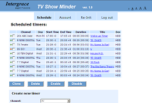
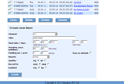
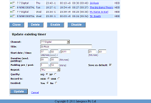
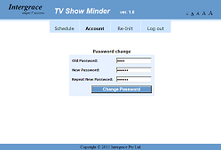
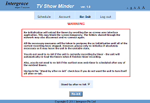
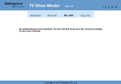

TV Show Minder
TV Show Minder is a free for personal use application for Realtek-based media players with the PVR/DVR functionality. Extensively tested on HiMedia HD500B-TD but designed to also work on HDium Duo, HiMedia HD560B-TD, Noontech V9-T, Egreat EG-R3 and many other devices that use Venus Linux on MIPS processors.
TV Show Minder allows you to manage the timer recording schedule remotely through your favourite web browser or in the web browser of your device such as HiMedia HT500B/HD560B. Some of the functions of the application, such as setting of the recording padding, cloning of the timers and delayed shutdown, are completely unique and do not exist in the on-screen user interface of the device. The setting of the default recording padding also applies to the timers created later in the on-screen interface of the device, including those created via EPG (Electronic Programme Guide).
Brief feature list:
- View and set timers via Web to record TV channels and AV IN sources (for the devices with the AV input).
- Set/change any name to the timers.
- Edit all the timer parameters including channel and start time.
- Set/change pre and post-padding for the timer start time and duration.
- Save the padding values as defaults. The default values get automatically pre-populated in the new web timer form and...
- The default padding automatically applies to the timers created through the standard on-screen UI / menu system (in the Scheduled Recordings screen or via the EPG screen).
- Group operations: Clone, Delete, Enable or Disable multiple timers.
- Delayed re-initialisation and shutdown (entering stand-by) when all the current recordings have finished.
- Independent operation from Neighbour Web (Samba / Bittorrent) - separate user password and web session management.
- Internal HiMedia web browser support, provides font size switching control and persistent sessions.
- Automatic channel list retrieval for HiMedia firmware 1.0.1.x and 1.0.2.x (and, possibly, newer).
- Manual channel list configuration for other firmware versions or similar (non-HiMedia) devices.
- Free (donations are highly appreciated). No adware or spyware.
Screenshots:






Download
Click here
Installation Instructions
Note. You have to use telnet to enter some unix commands. Read this post if you haven't used telnet before.
- Decide where you want to install the application. The options are:
A. Internal hard disk - The easiest and the most cross-firmware compatible option, especially for the firmware 1.0.1.x.
B. USB-connected storage or SD/MMC/MS card - as easy as Option A, but requires the external storage to be plugged in all the time.
C. Internal flash (Nand). Best option, especially for firmware 1.0.2.31 - doesn't require internal or external disks or cards, but can be complicated for those firmware versions that don't support remounting of the root directory for writing or don't have enough free space allocated for the root partition - those firmware versions require repacking.
- Prepare the directory to install into.
A. Skip this step if you are NOT installing onto the internal hard drive.
- Firmware 1.0.1.x: The directory already exists and is writable. It is /tmp/hdd/root/unicgi
- Firmware 1.0.2.x:
- Create a new directory on your hard drive, for example, /tmp/hdd/volumes/HDD1/www
mkdir /tmp/hdd/volumes/HDD1/www
- Copy all the files and sub-directories from /tmp/package/unicgi into it
cp -r /tmp/package/unicgi/* /tmp/hdd/volumes/HDD1/www
- Point httpd to this new directory. Either (1) by changing the /tmp/www symlink or (2), if you use firmware 1.0.2.31, by editing /etc/inetd.conf:
ln -sf /tmp/hdd/volumes/HDD1/www /tmp/www
The link reverts to its original value on each restart, so put this command in the startup script (/usr/local/etc/diy/appstart). The complete appstart can look like this:
#!/bin/sh
# Wait till all the disks are mounted
sleep 35
# Re-link /tmp/www
ln -sf /tmp/hdd/volumes/HDD1/www /tmp/www
- (alternative for 1.0.2.31 and, possibly, newer firmware)
mount -o remount,rw /
vi /etc/inetd.conf
In vi edit the line
www stream tcp nowait www-data /usr/sbin/httpd httpd -h /var/www
and change it to
www stream tcp nowait www-data /usr/sbin/httpd httpd -h /tmp/hdd/volumes/HDD1/www
(If new to vi, use this post as a quick reference to commands)
kill -HUP `cat /var/run/inetd.pid`
No need for a startup script. This is a permanent solution.
B. Skip this step if you are NOT installing onto a USB device or SD/MMC/MS card.
Same procedure as for A. Just replace references for /tmp/hdd/volumes/HDD1 with /tmp/usbmounts/sdc1 (or sdb, sdd, etc depending on how your device was mounted).
C. Skip this step if you are NOT installing onto the internal flash (Nand)
Put the downloaded zip file onto the samba network share of your device. If your prepared directory is visible in the network share (such as /tmp/hdd/volumes/HDD1/www would appear as www), then just unzip the downloaded file in there. If not, then put it unzipped in any folder on the share, e.g. downloads.
In telnet go to your prepared directory, unzip the file (if needed) and select the channel list access module:
cd /tmp/hdd/volumes/HDD1/www
unzip /tmp/hdd/volumes/HDD1/downloads/tvsminder10.zip (skip this command if the file is unzipped in Step 3)
To select the appropriate channel list module, just rename one of the available .so files in the cgi-bin/tvsminder directory to libchlist.so
cd cgi-bin/tvsminder
- Firmware 1.0.1.x:
mv libchlist1.so libchlist.so
- Firmware 1.0.2.x (newer might also work, but not tested):
mv libchlist2.so libchlist.so
- Other firmware / non-HiMedia firmware devices:
mv libchlistplain.so libchlist.so
mv dtvchannels.info /usr/local/etc
Edit /usr/local/etc/dtvchannels.info to add/remove TV channels.
vi /usr/local/etc/dtvchannels.info
If you are new to vi, refer to this post.
- Make the command files executable. Skip this step if your directory is on the FAT or NTFS partition (e.g. under /tmp/hdd/volumes/HDD1).
chmod +x tvsminder reinit *.cgi
Shutdown support. Skip this step if you are using firmware 1.0.2.31 or if you've done something similar to discribed in this post, Step 1 "For old firmware..." to use /tmp/command_sender.txt.
Edit /usr/local/etc/rcS using vi. Find the line:
./RootApp DvdPlayer&
and replace it with the following line:
touch /tmp/command_sender.txt && tail -f /tmp/command_sender.txt | ./RootApp DvdPlayer&
That's it. Access the application by navigating to
http://venus.ip.address/cgi-bin/tvsminder/tvsminder.cgi
(where venus.ip.address is the IP address of your device) in your computer web browser or
http://localhost/cgi-bin/tvsminder/tvsminder.cgi
in the web browser of your device (such as HiMedia HD500B/HD560B)
The login name is admin and the initial password is 123
You can change the password later in the Account screen of TV Show Minder. The login and password are independent from the login / password used in Samba and Neigbour Web (if the security is on). Primarily this is because the security for timers has to be always on (the application is designed to be used over the Internet), even if the system security is off because you want to continue using Samba without passwords.
A note on the HiMedia web browser. It's very basic and has many limitations. One of them is the inability to store HTTP cookies. All the cookies disappear when you leave the browser. This is why many websites requiring logging in ask to log in again on next visit even if you ticked "Remember me" or "Stay signed in" during log-in last time. TV Show Minder, however, has a special mechanism to overcome this problem and to go straight into the application on the next visit. For this to work you must save a bookmark ("favorite") in the web browser. If you are using firmware 1.0.2.31 then you are good to go, but if the web browser in your firmware can't save bookmarks, read this post on how to make it to do so.
Here is what you need to do to stay signed in the HiMedia web browser: in the login screen tick "Stay signed in" and log in. When you get to the main page (Scheduled Timers), click on the Schedule menu tab. The screen will refresh. You can also notice that the URL now contains parameter icgisession. Bookmark the page now. When you use this bookmark next time you open the web browser, the login screen won't come up, unless you explicitly logged out from the last session. If you have logged out you'll need to re-login, click Schedule and save the bookmark again.
Please consider making a small donation to support our work on this product
|